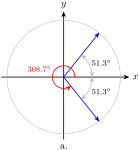

Section 4.1 Angles and Rotation
Subsection Introduction
So far we have studied angles as parts of triangles, but we can also use angles to describe rotation. For example, think of the minute hand on a clock. Every hour, the minute hand moves through one complete rotation, or \(360\degree\text{.}\) In two hours, the minute hand rotates through \(720\degree\text{.}\)
Example 4.1.
Through how many degrees does the minute hand rotate in an hour and a half? In forty minutes?
Solution.
Look at the figure at right. An hour and a half represents 1.5 complete rotations, or
\begin{equation*}
1.5(360\degree) = 540\degree
\end{equation*}
Forty minutes is two-thirds of an hour, so the minute hand rotates through
\begin{equation*}
\dfrac{2}{3}(360\degree) = 240\degree
\end{equation*}
Checkpoint 4.2.
The volume control on an amplifier is a dial with ten settings, as shown at right. Through how many degrees would you rotate the dial to increase the volume level from 0 to 7?
Subsection Angles in Standard Position
The degree measure of an angle depends only on the fraction of a whole rotation between its sides, and not on the location or position of the angle. To compare and analyze angles, we place them in standard position, so that the vertex of the angle is located at the origin and its initial side lies on the positive \(x\)-axis. If the terminal side rotates counter-clockwise, the degree measure of the angle is positive; it is negative if the terminal side rotates clockwise. The figure below shows four angles and how each appears in standard position.
One-half a complete revolution is \(180\degree\text{,}\) and three-quarters of one revolution is \(270\degree\text{.}\) Thus, for angles between \(180\degree\) and \(270\degree\) in standard position, the terminal side lies in the third quadrant, and for angles between \(270\degree\) and \(360\degree\text{,}\) the terminal side lies in the fourth quadrant.
Example 4.3.
Find the degree measure of the angles \(\theta\) and \(\alpha\) shown below, and sketch each angle in standard position.
Solution.
a. The angle \(\alpha\) is one-fifth of a complete revolution, or
\begin{equation*}
\dfrac{1}{5}(360\degree) = 72\degree
\end{equation*}
In standard position, it is a first-quadrant angle, as shown in figure (a) below.
b. The angle \(\beta\) is \(\dfrac{11}{12}\) of a complete revolution, or
\begin{equation*}
\dfrac{11}{12}(360\degree) = 330\degree
\end{equation*}
In standard position, it is a fourth-quadrant angle. (See Figure (b).)
Checkpoint 4.4.
Find the degree measure of each angle below, and sketch the angle in standard position.
Subsection Trigonometric Ratios for All Angles
In Chapter 3 we defined the sine, cosine, and tangent for obtuse angles by placing the angle in a Cartesian coordinate system. We can do the same for angles that represent rotations.
First, we place the angle \(\theta\) in standard position, with its vertex at the origin. We picture the terminal side sweeping counter-clockwise around a circle to form the angle.
Next, we choose a point \(P\) with coordinates \((x,y)\) on the terminal side, as shown at right. The distance from the origin to \(P\) is then \(r = \sqrt{x^2 + y^2}\text{.}\) The trigonometric ratios of \(\theta\) are defined as follows.
The Trigonometric Ratios.
If \(\theta\) is an angle in standard position, and \((x,y)\) is a point on its terminal side, with \(r = \sqrt{x^2 + y^2}\text{,}\) then
\begin{equation*}
\blert{\sin (\theta) = \dfrac{y}{r}~~~~~~~~~ \cos (\theta) = \dfrac{x}{r}~~~~~~~~~ \tan (\theta) = \dfrac{y}{x}}
\end{equation*}
We can choose any point on the terminal side of the angle, and the trig ratios defined by its coordinates will be the same. (Can you explain why? Think about similar triangles.) And, as we noted when we first defined the trig ratios, they are functions of the input angle, so there is only one sine, cosine, or tangent for a given angle.
Note 4.5.
The notation \(\sin(\theta)\) is read "sine of theta," just as we say "f of x" for \(f(x)\text{.}\) The parentheses do not mean multiplication, but rather tell us to apply the function.
Because it is the distance from the origin to \(P\text{,}\) \(r\) is always positive. However, \(x\) and \(y\) can be positive or negative (or zero), depending on the angle \(\theta\text{.}\) For example, in the second quadrant, \(x\) is negative but \(y\) is positive, so the cosine and the tangent of angles between \(90\degree\) and \(180\degree\) are negative, but their sines are positive.
Example 4.6.
Give the sign of each of the three trigonometric ratios of the angles.
\(\displaystyle 200\degree\)
\(\displaystyle 300\degree\)
Solution.
a. In standard position, the terminal side of an angle of \(200\degree\) lies in the third quadrant. (See figure (a) below.) In the third quadrant, \(x \lt 0\) and \(y \lt 0\text{,}\) but \(r \gt 0\text{.}\) Thus, \(\sin (200\degree)\) is negative, \(\cos (200\degree)\) is negative, and \(\tan (200\degree)\) is positive.
b. The terminal side of \(300\degree\) lies in the fourth quadrant, so \(x \gt 0\) and \(y \lt 0\text{,}\) and \(r \gt 0\text{.}\) Thus, \(\sin (300\degree)\) is negative, \(\cos (300\degree)\) is positive, and \(\tan (300\degree)\) is negative.
Checkpoint 4.7.
For angles in each of the four quadrants shown below, explain why the indicated trig ratios are positive. Then complete the table.
| Quadrant |
Degrees |
Sine |
Cosine |
Tangent |
| First |
\(0\degree \lt \theta \lt 90\degree\) |
positive |
positive |
positive |
| Second |
\(90\degree \lt \theta \lt 180\degree\) |
\(\hphantom{0000}\) |
\(\hphantom{0000}\) |
\(\hphantom{0000}\) |
| Third |
\(180\degree \lt \theta \lt 270\degree\) |
\(\hphantom{0000}\) |
\(\hphantom{0000}\) |
\(\hphantom{0000}\) |
| Fourth |
\(270\degree \lt \theta \lt 360\degree\) |
\(\hphantom{0000}\) |
\(\hphantom{0000}\) |
\(\hphantom{0000}\) |
Answer.
| Quadrant |
Degrees |
Sine |
Cosine |
Tangent |
| First |
\(0\degree \lt \theta \lt 90\degree\) |
positive |
positive |
positive |
| Second |
\(90\degree \lt \theta \lt 180\degree\) |
positive |
negative |
negative |
| Third |
\(180\degree \lt \theta \lt 270\degree\) |
negative |
negative |
positive |
| Fourth |
\(270\degree \lt \theta \lt 360\degree\) |
negative |
positive |
negative |
Example 4.8.
Find the sine, cosine, and tangent of the angle shown at right.
Solution.
The \(y\)-coordinate of the point \(P\) is \(-5\text{,}\) and \(r = 6\text{,}\) so
\begin{equation*}
\sin (\theta) = \dfrac{y}{r} = \dfrac{-5}{6}
\end{equation*}
To find the \(x\)-coordinate of \(P\text{,}\) we use the equation of a circle of radius \(6\text{,}\) \(x^2 + y^2 = 36\text{.}\)
\begin{align*}
x^2 + (-5)^2 \amp = 36\\
x^2 \amp = 36 - 25 = 11\\
x \amp = \pm \sqrt{11}
\end{align*}
Because \(P\) is in the third quadrant, \(x = -\sqrt{11}\text{.}\) Thus,
\begin{equation*}
\cos (\theta) = \dfrac{x}{r} = \dfrac{-\sqrt{11}}{6}~~~~ \text{and} ~~~~\tan (\theta) = \dfrac{y}{x} = \dfrac{-5}{-\sqrt{11}} = \dfrac{5}{\sqrt{11}}
\end{equation*}
Checkpoint 4.9.
Find the sine, cosine, and tangent of the angle shown at right. The circle has radius 4.
Answer.
\(\sin (\theta) = \dfrac{\sqrt{7}}{4},~~\cos (\theta) = \dfrac{-3}{4},~~\tan (\theta) = \dfrac{-\sqrt{7}}{3}\)
Subsection Reference Angles
In Section 3.1 we learned that the trig ratios for angles in the second quadrant are the same as the trig ratios for their supplements, except for sign. For example, you can use your calculator to verify that
| \(\sin (130\degree) = 0.7660\) |
\(\sin (50\degree) = 0.7660\) |
| \(\cos (130\degree) = -0.6428\) |
\(\cos (50\degree) = 0.6428\) |
| \(\tan (130\degree) = -1.1918\) |
\(\tan (50\degree) = 1.1918\) |
The trig ratios for \(130\degree\) and \(50\degree\) have the same absolute value because the two triangles formed by the angles are congruent, as shown above.
\(\triangle OP^{\prime}Q^{\prime}\) is called a reference triangle for \(130\degree\text{,}\) and \(50\degree\) is called the reference angle.
The trig ratios for angles between \(180\degree\) and \(360\degree\text{,}\) whose terminal sides lie in the third and fourth quadrants, are also related to the trig ratios of familiar angles in the first quadrant. We "refer" the angle to a first quadrant angle with a congruent reference triangle.
Note 4.10.
Reference angles will be important when we need to solve trigonometric equations. There will always be two angles with the same trig ratio (except for quadrantal angles), and they will have the same reference angle.
We can construct reference triangles for angles in any of the four quadrants, and the trig ratios of the angle are the same as the trig ratios of its reference angle, up to sign. Here is how to construct a reference triangle for an angle :
Constructing a reference triangle.
Choose a point \(P\) on the terminal side.
Draw a line from point \(P\) perpendicular to the \(x\)-axis.
The figure below shows angles \(\theta\) between \(0\degree\) and \(360\degree\text{,}\) and the reference angle, \(\widetilde{\theta}\text{,}\) for each. Study the figures, and make sure you understand the formula for finding the reference angle in each quadrant.
Note 4.11.
These observations may help you remember the formulas:
The right triangle formed in this way always lies between the terminal side and the \(x\)-axis.
The positive acute angle formed between the terminal side and the \(x\)-axis is the reference angle, and the right triangle is the reference triangle.
Activity 4.1. Reference Angles.
The circle below has radius 1 and is centered at the origin.
Use a protractor to draw an angle of \(56\degree\) in standard position. Draw its reference triangle.
Use your calculator to find the sine and cosine of \(56\degree\text{,}\) rounded to two decimal places. Label the sides of the reference triangle with their lengths.
What are the coordinates of the point \(P\) where your angle intersects the circle?
Draw the reflection of your reference triangle across the \(y\)-axis, so that you have a congruent triangle in the second quadrant.
You now have the reference triangle for a second-quadrant angle in standard position. What is that angle?
Use your calculator to find the sine and cosine of your new angle. Label the coordinates of the point \(Q\) where the angle intersects the circle.
Draw the reflection of your triangle from part (1d) across the \(x\)-axis, so that you have a congruent triangle in the third quadrant.
You now have the reference triangle for a third-quadrant angle in standard position. What is that angle?
Use your calculator to find the sine and cosine of your new angle. Label the coordinates of the point \(R\) where the angle intersects the circle.
Draw the reflection of your triangle from part (2c) across the \(y\)-axis, so that you have a congruent triangle in the fourth quadrant.
You now have the reference triangle for a fourth-quadrant angle in standard position. What is that angle?
Use your calculator to find the sine and cosine of your new angle. Label the coordinates of the point where the angle intersects the circle.
Generalize: All four of your angles have the same reference angle, \(56\degree\text{.}\) For each quadrant, write a formula for the angle whose reference angle is \(\theta\text{.}\)
Quadrant I:
Quadrant II:
Quadrant III:
Quadrant IV:
Example 4.12.
Find the reference angle for \(200\degree\text{.}\)
Sketch \(200\degree\) and its reference angle in standard position, along with their reference triangles. Verify that both angles have the same trigonometric ratios, up to sign.
Solution.
In standard position, an angle of
\(200\degree\) lies in the third quadrant. Its reference angle is
\begin{equation*}
200\degree - 180\degree = 20\degree
\end{equation*}
Both angles are shown at right. Note that the reference triangle for \(200\degree\) is congruent to the reference triangle for \(20\degree\text{.}\) You can use your calculator to verify the following values.
\begin{align*}
\sin (20\degree) \amp = 0.3420 \amp\amp \sin (200\degree) = -0.3420\\
\cos (20\degree)\amp = 0.9397 \amp\amp \cos (200\degree) = -0.9397\\
\tan (20\degree) \amp = 0.3640 \amp\amp \tan (200\degree) = 0.3640
\end{align*}
Checkpoint 4.13.
Find the reference angle for \(285\degree\text{.}\)
Sketch \(285\degree\) and its reference angle in standard position, along with their reference triangles. Verify that both angles have the same trigonometric ratios, up to sign.
Answer.
\(\displaystyle 75\degree\)
\(\sin (285\degree) = -\sin (75\degree) = -0.9659\text{,}\) \(\cos (285\degree) = \cos (75\degree) = 0.2588\text{,}\) \(\tan (285\degree) = -\tan (75\degree) = -3.7321\)
Subsection Using Reference Angles
Here is a summary of our discussion about reference angles.
Reference Angles.
The trigonometric ratios of any angle are equal to the ratios of its reference angle, except for sign. The sign of the ratio is determined by the quadrant.
Any acute angle \(\theta\) is the reference angle for four angles between \(0\degree\) and \(360\degree\text{,}\) one in each quadrant. The figure below shows the four angles in standard position whose reference angle is \(35\degree\text{.}\) Note that each angle is found by measuring \(35\degree\) from the \(x\)-axis in the appropriate quadrant, and that the four angles together make a “bow-tie†shape.
From the figure, you can see that the angles in each quadrant with a given reference angle are computed as follows.
To find an angle \(\theta\) with a given reference angle \(\widetilde{\theta}\text{:}\).
| Quadrant I: \(~~~~~~\theta = \widetilde{\theta}\)
|
\(\hphantom{0000}\) |
Quadrant II: \(~~~~\theta = 180\degree - \widetilde{\theta}\)
|
| Quadrant III: \(~~~~~\theta = 180\degree + \widetilde{\theta}\)
|
\(\hphantom{0000}\) |
Quadrant IV: \(~~~~\theta = 360\degree - \widetilde{\theta}\)
|
Example 4.14.
Find two angles between \(0\degree\) and \(360\degree\) whose cosine is \(\dfrac{5}{8}\text{.}\) Round your answers to the nearest tenth of a degree.
Find two angles between \(0\degree\) and \(360\degree\) whose cosine is \(\dfrac{-5}{8}\text{.}\) Sketch the reference triangle for each angle.
Solution.
One of the angles we want is \(\cos^{-1}\left(\dfrac{5}{8}\right)\text{.}\) Use your calculator to find the first quadrant angle, \(51.3\degree\text{.}\) The cosine is also positive in the fourth quadrant, so we look for the angle in the fourth quadrant with reference angle \(51.3\degree\text{.}\) That angle is \(360\degree - 51.3\degree = 308.7\degree\text{,}\) as shown at right.

-
Because the cosine is negative in the second and third quadrants, we would like angles \(\theta\) in those quadrants whose reference angle is \(\widetilde{\theta} = 51.3\degree\text{.}\) In the second quadrant, we find
\begin{align*}
\theta \amp = 180\degree - \widetilde{\theta}\\
\amp = 180\degree - 51.3\degree = 128.7\degree
\end{align*}
And in the third quadrant,
\begin{align*}
\theta \amp = 180\degree + \widetilde{\theta}\\
\amp = 180\degree + 51.3\degree = 231.3\degree
\end{align*}
Both angles are shown above. You can check that the cosines of \(128.7\degree\) and \(231.3\degree\) are both approximately \(-0.625\text{.}\)
Checkpoint 4.15.
Find an angle in the third quadrant whose tangent is \(3.66\text{.}\) Round your answer to the nearest tenth of a degree.
Use reference angles to find two angles whose tangent is \(-3.66\text{.}\)
Answer.
\(\displaystyle 254.7\degree\)
\(105.3\degree\text{,}\) \(~285.3\degree\)
Subsection The Special Angles
Recall that the angles
\(30\degree,~45\degree\) and
\(60\degree\) are called the
special angles because we can express the exact values of their trigonometric ratios in terms of radicals. There are special angles in all four quadrants; namely, those whose reference angles are
\(30\degree,~45\degree\) and
\(60\degree\text{.}\)
Example 4.16.
Find exact values for the sine, cosine, and tangent of \(210\degree\text{.}\)
Solution.
An angle of \(210\degree\) lies in the third quadrant, and its reference angle is
\begin{equation*}
\widetilde{\theta} = 210\degree - 180\degree =30\degree
\end{equation*}
In the third quadrant, the sine and cosine are negative, so we have
\begin{equation*}
\sin (\theta) = \dfrac{-1}{2},~~~\cos (\theta) = \dfrac{-\sqrt{3}}{2}, ~~~\tan (\theta) = \dfrac{1}{\sqrt{3}}
\end{equation*}
Alternatively, consider the reference triangle in the figure at right, where \(r = 2\text{.}\) Because the sides of a 30-60-90 triangle are in the ratio \(1:\sqrt{3}:2\text{,}\) the point \(P\) has coordinates \((-\sqrt{3}, -1)\text{.}\) Using the definitions of the trig ratios, we can calculate the values above.
Checkpoint 4.17.
Sketch an angle of \(300\degree\) in standard position, and its reference triangle. Find the reference angle for \(300\degree\text{.}\)
Find exact values for the sine, cosine, and tangent of \(300\degree\text{.}\)
Answer.
Reference angle: \(~60\degree\)
\(\sin (300\degree) = \dfrac {-\sqrt{3}}{2}\text{,}\) \(~\cos (300\degree) = \dfrac {1}{2}\text{,}\) \(~\tan (300\degree) = -\sqrt{3}\)
All of the special angles are shown at right. In the Homework Problems you will calculate the three trigonometric ratios for all the special angles, and it will be useful to be familiar with these values, and be able to calculate them quickly. You may want to review the two "special triangles" in Section 2.3.
Subsection Coterminal Angles
Because \(360\degree\) represents one complete revolution, we can add or subtract a multiple of \(360\degree\) to any angle, and the terminal side will arrive at the same position. For example, the angles \(70\degree\) and \(430\degree\) have the same terminal side because \(430\degree = 70\degree + 360\degree\text{.}\) Such angles are called coterminal.
The angle \(790\degree\) is also coterminal with \(70\degree\text{,}\) because if we add two revolutions to \(70\degree\text{,}\) we get \(~790\degree = 70\degree+ 2(360\degree)\text{,}\) as shown below.
Because coterminal angles have the same standard position, their trigonometric ratios are equal. For example, you can verify that, to four decimal places,
\begin{equation*}
\cos (790\degree) = \cos (70\degree) = 0.3420
\end{equation*}
Example 4.18.
Find an angle between \(0\degree\) and \(360\degree\) that is coterminal with \(520\degree\text{.}\)
Use a calculator to verify that the trig ratios of \(520\degree\) are the same as the ratios of the coterminal angle.
Solution.
We subtract multiples of
\(360\degree\) from
\(520\degree\) until the remainder is less than
\(360\degree\text{.}\)
\begin{equation*}
520\degree - 360\degree = 160\degree
\end{equation*}
Because
\(160\degree\) is between
\(0\degree\) and
\(360\degree\text{,}\) this is the angle we want.
You can use your calculator to see that
\begin{align*}
\sin (160\degree) \amp = \sin (520\degree) = 0.3420\\
\cos (160\degree) \amp = \cos (520\degree) = -0.9397\\
\tan (160\degree) \amp = \tan (520\degree) = -0.3640
\end{align*}
If the direction of rotation is important, we let positive angles represent rotation in the counter-clockwise direction, and negative angles represent rotation in the clockwise direction. For example, the angle \(-60\degree\) shown at right lies in the fourth quadrant. It is coterminal with \(-60\degree + 360\degree = 300\degree\text{.}\)
Checkpoint 4.19.
Find two angles coterminal with \(102\degree\text{,}\) one positive and one negative.
Answer.
\(462\degree\text{,}\) \(~{-258}\degree\)
Review the following skills you will need for this section.
Algebra Refresher 4.2.
-
\(f(x) = x^2 - 2x\)
\(\displaystyle f(-3)\)
\(\displaystyle f(a-3)\)
\(\displaystyle f(a) - 5\)
\(\displaystyle f(a) - f(5)\)
-
\(g(x) = \sqrt{x + 4}\)
\(\displaystyle g(9)\)
\(\displaystyle g(4h)\)
\(\displaystyle g(0) + g(1)\)
\(\displaystyle g(c^2)\)
-
\(F(x) = \dfrac{2}{x}\)
\(\displaystyle F\left(\dfrac{-1}{2}\right)\)
\(\displaystyle F\left(\dfrac{w}{2}\right)\)
\(\displaystyle F(w + 2)\)
\(\displaystyle F(w) + F(2)\)
-
\(G(x) = 2^x\)
\(\displaystyle G(-3)\)
\(\displaystyle G(a + 3)\)
\(\displaystyle G(a) + G(3)\)
\(\displaystyle G\left(\dfrac{3}{2}\right)\)
\(\underline{\qquad\qquad\qquad\qquad}\)
Algebra Refresher Answers
\(\displaystyle 15\)
\(\displaystyle a^2-8a+15\)
\(\displaystyle a^2-2a-5\)
\(\displaystyle a^2-2a-15\)
\(\displaystyle \sqrt{13}\)
\(\displaystyle 2\sqrt{h+1}\)
\(\displaystyle 2 + \sqrt{5}\)
\(\displaystyle \sqrt{c^2 + 4}\)
\(\displaystyle -4\)
\(\displaystyle \dfrac{4}{w} \)
\(\displaystyle \dfrac{2}{w + 2}\)
\(\displaystyle \dfrac{2}{w} + 1\)
\(\displaystyle \dfrac{1}{8}\)
\(\displaystyle 8(2^a)\)
\(\displaystyle 2^a + 8\)
\(\displaystyle 2\sqrt{2}\)
Subsection Section 4.1 Summary
Subsubsection Vocabulary
Standard position
Reference angle
Reference triangle
Coterminal angle
Subsubsection Concepts
We can use angles to describe rotation. Positive angles indicate rotation in the counter-clockwise direction; negative angles describe clockwise rotation.
We define the trigonometric ratios of any angle by placing the angle in standard position and choosing a point on the terminal side, with
\(r = \sqrt{x^2 + y^2}\text{.}\) The Trigonometric Ratios.
If \(\theta\) is an angle in standard position, and \((x,y)\) is a point on its terminal side, with \(r = \sqrt{x^2 + y^2}\text{,}\) then
\begin{equation*}
\sin (\theta) = \dfrac{y}{r}~~~~~~~~~ \cos (\theta) = \dfrac{x}{r}~~~~~~~~~ \tan (\theta) = \dfrac{y}{x}
\end{equation*}
-
To construct a reference triangle for an angle :
Choose a point \(P\) on the terminal side.
Draw a line from point \(P\) perpendicular to the \(x\)-axis.
-
The reference angle for \(\theta\) is the positive acute angle formed between the terminal side of \(\theta\) and the \(x\)-axis.
The trigonometric ratios of any angle are equal to the ratios of its reference angle, except for sign. The sign of the ratio is determined by the quadrant.
-
To find an angle \(\theta\) with a given reference angle \(\widetilde{\theta}\text{:}\).
| Quadrant I: \(~~~~~~\theta = \widetilde{\theta}\)
|
\(\hphantom{0000}\) |
Quadrant II: \(~~~~\theta = 180\degree - \widetilde{\theta}\)
|
| Quadrant III: \(~~~~~\theta = 180\degree + \widetilde{\theta}\)
|
\(\hphantom{0000}\) |
Quadrant IV: \(~~~~\theta = 360\degree - \widetilde{\theta}\)
|
There are always two angles between \(0\degree\) and \(360\degree\) (except for the quadrantal angles) with a given trigonometric ratio.
Coterminal angles have equal trigonometric ratios.
Subsubsection Study Questions
Explain why \(\cos (\theta) \le 1\) for any angle \(\theta\text{.}\)
Is it true that \(\tan (\theta) \le 1\) for any angle \(\theta\) ? Explain.
Sketch a figure showing how to compute the reference angle for angles in each of the four quadrants.
True or false: If \(\beta \gt \alpha\text{,}\) then \(\sin (\beta) \gt \sin \alpha\text{.}\)
How many angles have a cosine equal to 0.4? How many angles between \(0\degree\) and \(360\degree\) have a cosine equal to 0.4?
Subsubsection Skills
Use angles to represent rotations #1-6
Sketch angles in standard position #7-12
Find coterminal angles #13-24
Find and use reference angles #25-44, 55-64
Find trigonometric ratios for the special angles #45-54
Exercises Homework 4.1
1.
How many degrees are in each angle?
\(\dfrac{3}{5}\) of one rotation
\(\dfrac{3}{10}\) of one rotation
\(\dfrac{4}{3}\) of one rotation
\(\dfrac{8}{3}\) of one rotation
2.
How many degrees are in each angle?
\(\dfrac{5}{6}\) of one rotation
\(\dfrac{3}{8}\) of one rotation
\(\dfrac{7}{4}\) of one rotation
\(\dfrac{7}{12}\) of one rotation
3.
What fraction of a complete rotation is represented by each angle?
\(\displaystyle 45\degree\)
\(\displaystyle 300\degree\)
\(\displaystyle 540\degree\)
\(\displaystyle 420\degree\)
4.
What fraction of a complete rotation is represented by each angle?
\(\displaystyle 60\degree\)
\(\displaystyle 240\degree\)
\(\displaystyle 450\degree\)
\(\displaystyle 150\degree\)
5.
Through what angle does the hour hand of a clock rotate between 2 pm and 10 pm?
Through what angle does the hour hand of a clock rotate between 2 am and 10 pm?
6.
Through what angle does the minute hand of a clock rotate between 3:25 am and 3:50 am?
Through what angle does the minute hand of a clock rotate between 4:10 pm and 6:25 pm?
Exercise Group.
For Problems 7–12, calculate the degree measure of the unknown angle, and sketch the angle in standard position.
Exercise Group.
For Problems 13–18, find two angles, one positive and one negative, that are coterminal with the given angle.
13.
\(40\degree\)
14.
\(160\degree\)
15.
\(215\degree\)
16.
\(250\degree\)
17.
\(305\degree\)
18.
\(340\degree\)
Exercise Group.
For Problems 19–24, find a positive angle between \(0\degree\) and \(360\degree\) that is coterminal with the given angle.
19.
\(-65\degree\)
20.
\(-140\degree\)
21.
\(-290\degree\)
22.
\(-325\degree\)
23.
\(-405\degree\)
24.
\(-750\degree\)
Exercise Group.
For Problems 25–26, use the grid provided below.
25.
Draw two different angles \(\alpha\) and \(\beta\) in standard position whose sine is \(0.6\text{.}\) Note that the radius of the circle is 1,
Use a protractor to measure \(\alpha\) and \(\beta\text{.}\)
Find the reference angles for both \(\alpha\) and \(\beta\text{.}\) Draw in the reference triangles.
26.
Draw two different angles \(\theta\) and \(\phi\) in standard position whose sine is \(-0.8\text{.}\)
Use a protractor to measure \(\theta\) and \(\phi\text{.}\)
Find the reference angles for both \(\theta\) and \(\phi\text{.}\) Draw in the reference triangles.
Exercise Group.
For Problems 27–28, use the grid provided below.
27.
Draw two different angles \(\alpha\) and \(\beta\) in standard position whose cosine is \(0.3\text{.}\)
Use a protractor to measure \(\alpha\) and \(\beta\text{.}\)
Find the reference angles for both \(\alpha\) and \(\beta\text{.}\) Draw in the reference triangles.
28.
Draw two different angles \(\theta\) and \(\phi\) in standard position whose cosine is \(-0.4\text{.}\)
Use a protractor to measure \(\theta\) and \(\phi\text{.}\)
Find the reference angles for both \(\theta\) and \(\phi\text{.}\) Draw in the reference triangles.
Exercise Group.
For Problems 29–34, find the reference angle. Make a sketch showing the angle, the reference angle, and the reference triangle.
29.
\(100\degree\)
30.
\(125\degree\)
31.
\(216\degree\)
32.
\(242\degree\)
33.
\(297\degree\)
34.
\(336\degree\)
Exercise Group.
For Problems 35–40, find three angles between \(90\degree\) and \(360\degree\) with the given reference angle, and sketch all four angles on the same grid.
35.
\(15\degree\)
36.
\(26\degree\)
37.
\(40\degree\)
38.
\(50\degree\)
39.
\(68\degree\)
40.
\(75\degree\)
Exercise Group.
For Problems 41–48, use the values given below to find the trigonometric ratio. Do not use a calculator!
\begin{equation*}
\cos (23\degree) = 0.9205~~~~~~\sin (46\degree) = 0.7193~~~~~~\tan (78\degree) = 4.7046
\end{equation*}
41.
\(\cos (157\degree)\)
42.
\(\sin (226\degree)\)
43.
\(\sin (314\degree)\)
44.
\(\cos (203\degree)\)
45.
\(\tan (258\degree)\)
46.
\(\tan (282\degree)\)
47.
\(\sin (-134\degree)\)
48.
\(\cos (-383\degree)\)
49.
On the circle in the figure, all angles are shown in standard position. Find the measure in degrees of the angles labeled (a)-(i).
50.
Find the reference angle for each of your answers in Problem 45.
51.
Draw three angles, one in each quadrant except the first, whose reference angle is \(60\degree\text{.}\)
Find exact values for the sine, cosine, and tangent of each of the angles in part (a).
52.
Draw three angles, one in each quadrant except the first, whose reference angle is \(30\degree\text{.}\)
Find exact values for the sine, cosine, and tangent of each of the angles in part (a).
53.
Draw three angles, one in each quadrant except the first, whose reference angle is \(45\degree\text{.}\)
Find exact values for the sine, cosine, and tangent of each of the angles in part (a).
54.
Complete the table with exact values.
| \(\theta\) |
\(30\degree\) |
\(45\degree\) |
\(60\degree\) |
\(120\degree\) |
\(135\degree\) |
\(150\degree\) |
\(210\degree\) |
\(225\degree\) |
\(240\degree\) |
\(300\degree\) |
\(315\degree\) |
\(330\degree\) |
| \(\cos (\theta)\) |
\(\hphantom{0000}\) |
\(\hphantom{0000}\) |
\(\hphantom{0000}\) |
\(\hphantom{0000}\) |
\(\hphantom{0000}\) |
\(\hphantom{0000}\) |
\(\hphantom{0000}\) |
\(\hphantom{0000}\) |
\(\hphantom{0000}\) |
\(\hphantom{0000}\) |
\(\hphantom{0000}\) |
\(\hphantom{0000}\) |
| \(\sin (\theta)\) |
\(\hphantom{0000}\) |
\(\hphantom{0000}\) |
\(\hphantom{0000}\) |
\(\hphantom{0000}\) |
\(\hphantom{0000}\) |
\(\hphantom{0000}\) |
\(\hphantom{0000}\) |
\(\hphantom{0000}\) |
\(\hphantom{0000}\) |
\(\hphantom{0000}\) |
\(\hphantom{0000}\) |
\(\hphantom{0000}\) |
| \(\tan (\theta)\) |
\(\hphantom{0000}\) |
\(\hphantom{0000}\) |
\(\hphantom{0000}\) |
\(\hphantom{0000}\) |
\(\hphantom{0000}\) |
\(\hphantom{0000}\) |
\(\hphantom{0000}\) |
\(\hphantom{0000}\) |
\(\hphantom{0000}\) |
\(\hphantom{0000}\) |
\(\hphantom{0000}\) |
\(\hphantom{0000}\) |
55.
In which two quadrants is the statement true?
The sine is negative.
The cosine is negative.
The tangent is positive.
56.
Find all angles between \(0\degree\) and \(360\degree\) for which the statement is true.
\(\displaystyle \cos (\theta) = -1\)
\(\displaystyle \sin (\theta) = -1\)
\(\displaystyle \tan (\theta) = -1\)
57.
Find two angles, \(0 \le \theta \lt 360\degree\text{,}\) with \(\sin (\theta) = 0\text{.}\)
Find two angles, \(0 \le \theta \lt 360\degree\text{,}\) with \(\cos (\theta) = 0\text{.}\)
58.
Find two angles, \(0 \le \theta \lt 360\degree\text{,}\) with \(\sin (\theta) = \cos (\theta)\text{.}\)
Find two angles, \(0 \le \theta \lt 360\degree\text{,}\) with \(\sin (\theta) = -\cos (\theta)\text{.}\)
Exercise Group.
For Problems 59–64, find a second angle between \(0\degree\) and \(360\degree\) with the given trigonometric ratio.
59.
\(\sin (75\degree)\)
60.
\(\cos (32\degree)\)
61.
\(\tan (84\degree)\)
62.
\(\sin (16\degree)\)
63.
\(\cos (47\degree)\)
64.
\(\tan (56\degree)\)
65.
Explain why the definitions of the trigonometric ratios for a third-quadrant angle (between \(180\degree\) and \(270\degree\)) are independent of the point \(P\) chosen on the terminal side. Illustrate with a figure.
66.
Explain why the definitions of the trigonometric ratios for a fourth-quadrant angle (between \(270\degree\) and \(360\degree\)) are independent of the point \(P\) chosen on the terminal side. Illustrate with a figure.